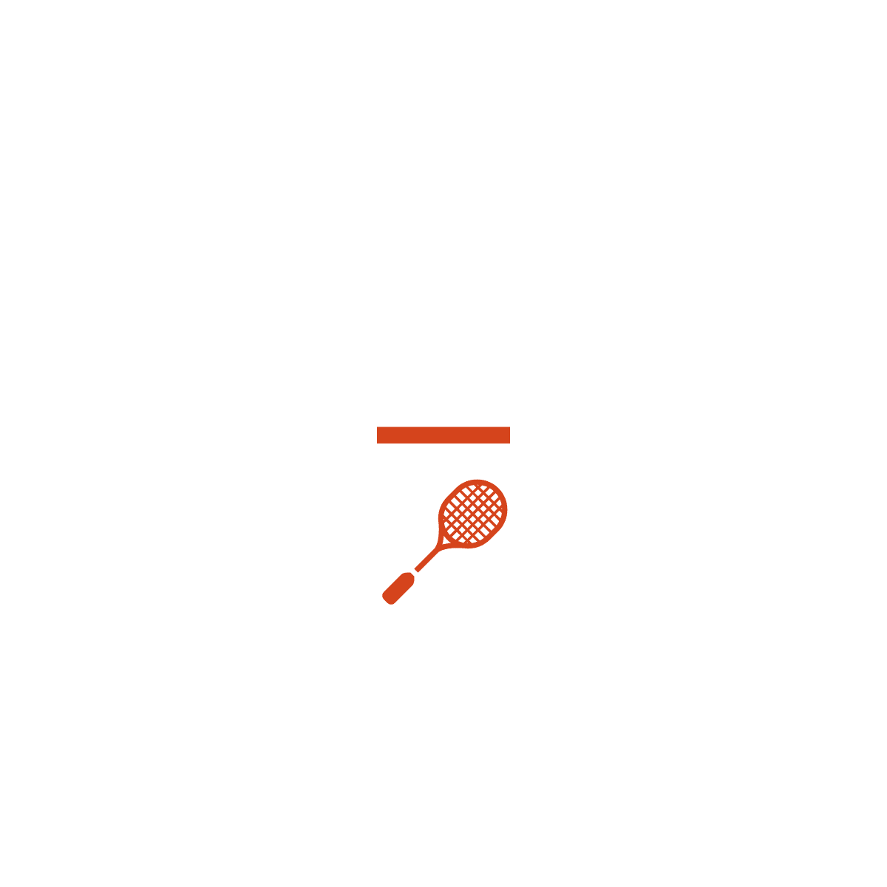
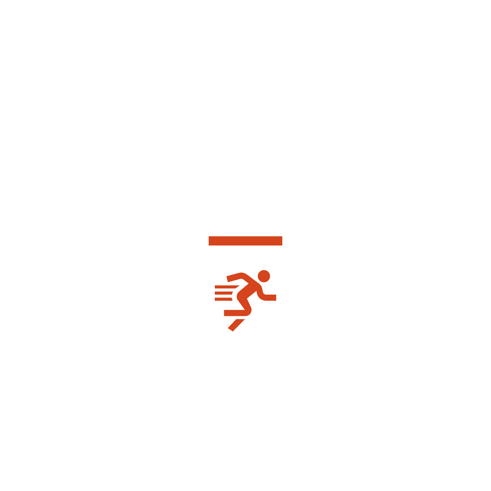
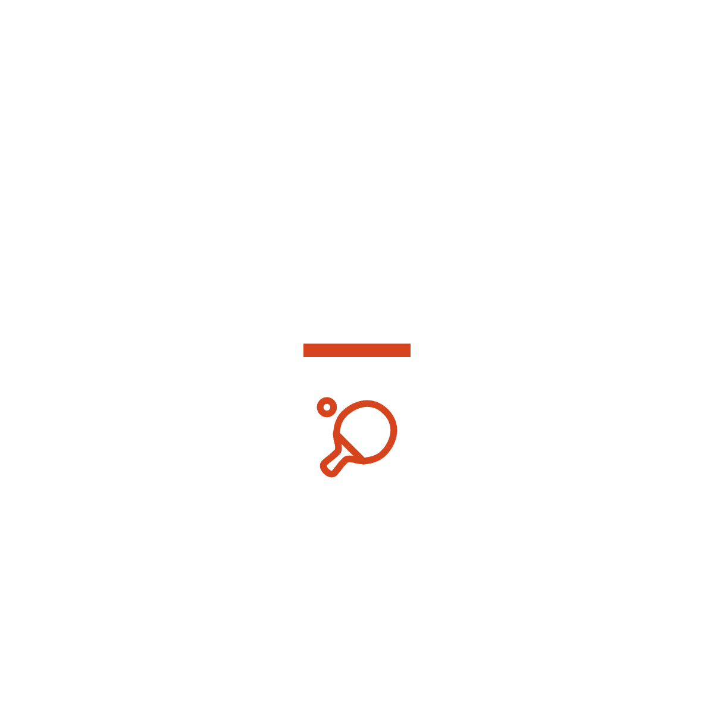
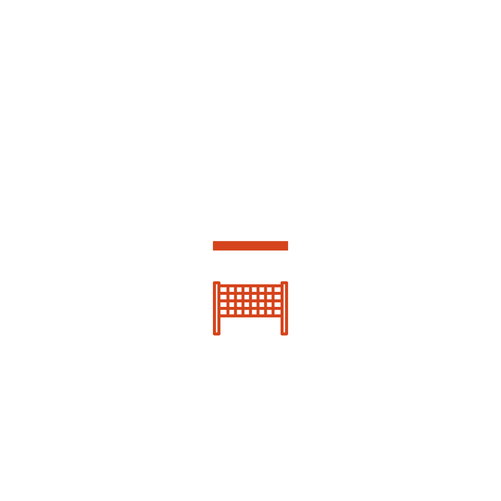
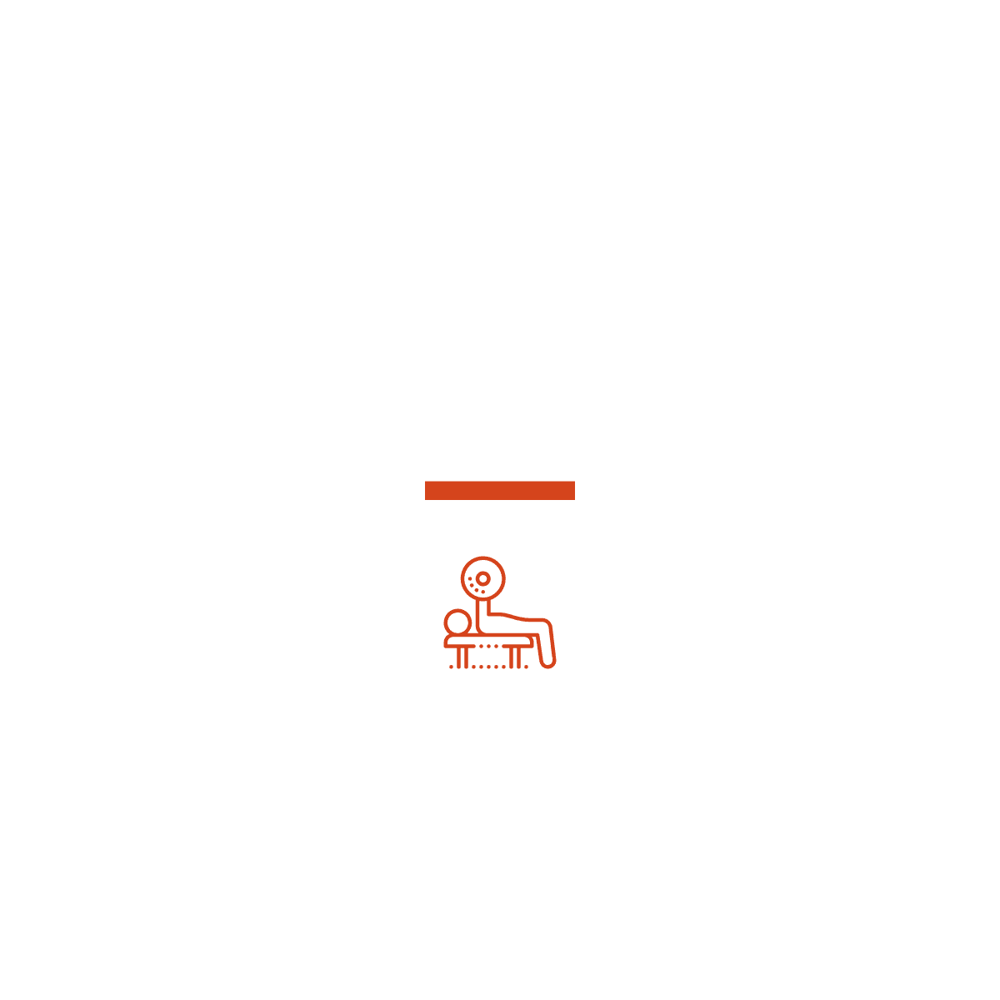
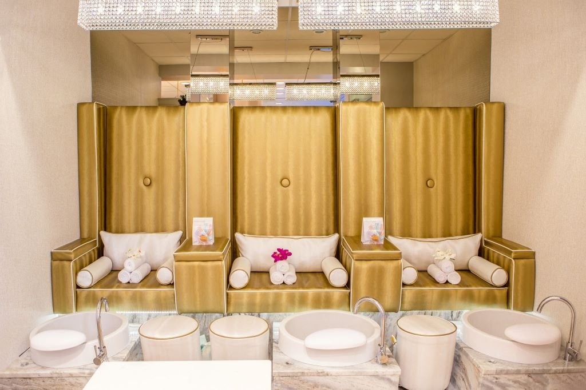
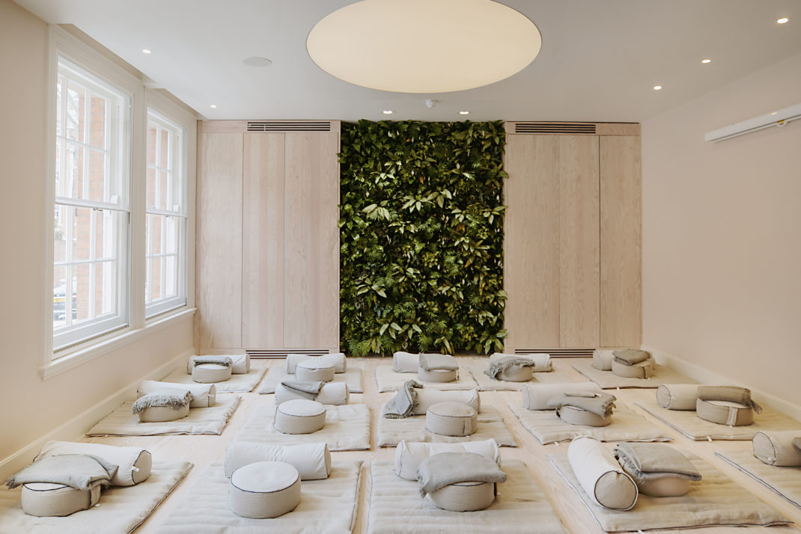
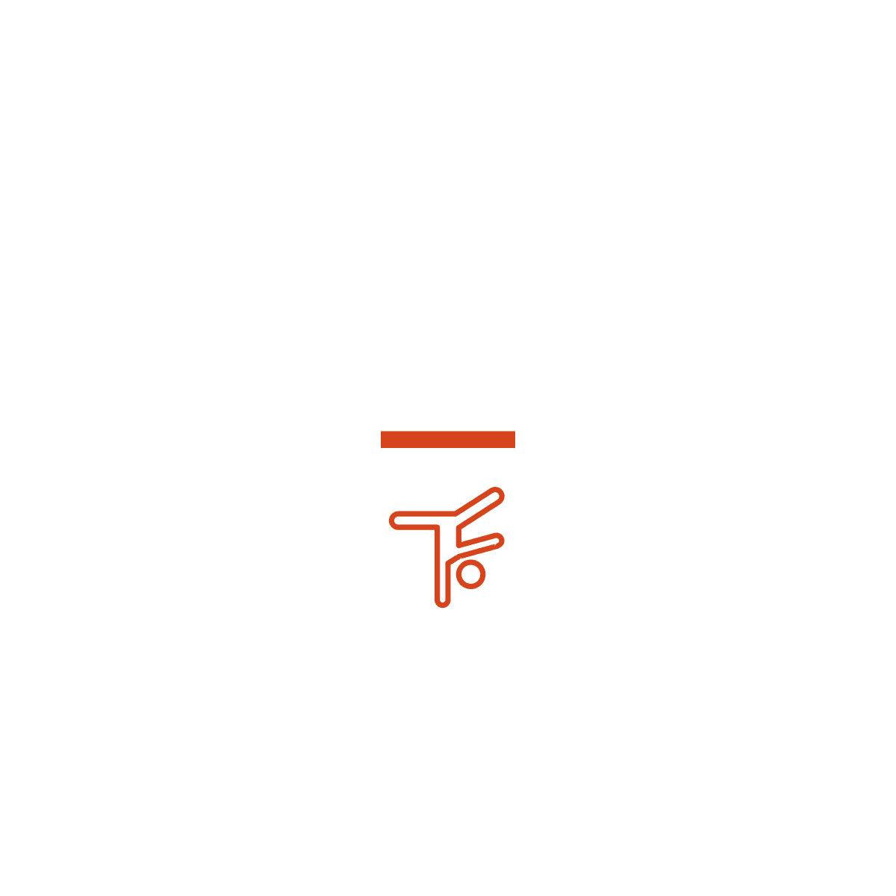
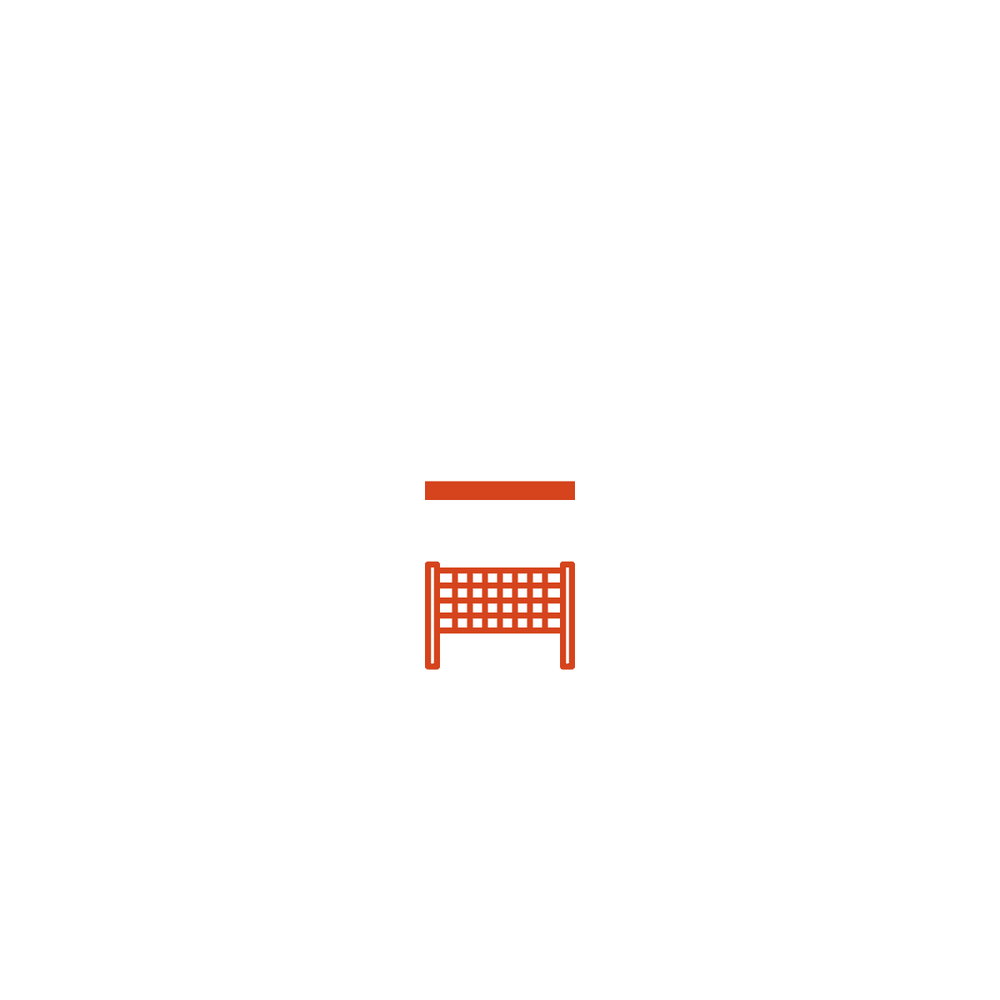

Спортивні ігри
-

Теніс
Теніс - захоплюючий спорт, який пропонує безліч переваг для здоров'я та фізичного розвитку.
В нашому спорткомплексі ви зможете насолоджуватися цим чудовим видом спорту завдяки нашим сучасним кортам та професійним тренерам. Теніс розвиває швидкість, координацію рухів, а також покращує концентрацію та витривалість.
Почати займатися тенісом - це крок до покращення фізичного стану, підтримання активного способу життя та отримання задоволення від гри в спортивному колективі. -

Пробіжка
Пробіжка - це простий і доступний спосіб тренування, який принесе вам багато користі.
У нашому спорткомплексі ви зможете насолоджуватися ідеальними умовами для пробіжки, будь то бігова доріжка або спеціально обладнані траси. Пробіжка покращує кардіоваскулярну систему, сприяє зниженню ваги, підвищує витривалість та заряджає вас позитивною енергією.
Почати заняття пробіжкою - це чудова мотивація для досягнення власних фітнес-цілей та збереження здоров'я. -

Настольний теніс
Настільний теніс - цікава та захоплююча гра, яка пропонує безліч переваг для фізичного та розумового розвитку.
В нашому спорткомплексі ви зможете насолоджуватися цим захоплюючим видом спорту завдяки нашим професійним столами та обладнанню. Гра в настільний теніс розвиває швидкість, рефлектирування, а також покращує координацію рухів та концентрацію.
Почати займатися настільним тенісом - це чудова мотивація для активного способу життя, соціалізації та отримання задоволення від змагань у спортивному колективі. -
Баскетбол
Баскетбол - захоплюючий спорт, який пропонує безліч переваг для фізичного та командного розвитку.
У нашому спорткомплексі ви зможете насолоджуватися грою в баскетбол завдяки нашим сучасним ігровим майданчикам та професійним тренерам. Баскетбол розвиває координацію рухів, швидкість, силу та витривалість. Це також прекрасний спосіб покращити соціальні навички та сприяє зміцненню дружби в команді.
Почати займатися баскетболом - це стимул до активного способу життя, досягнення спортивних цілей та відчуття справжньої радості від гри.- 
Волейбол
Волейбол - захоплюючий спорт, який пропонує безліч переваг для фізичного та командного розвитку.
У нашому спорткомплексі ви зможете насолоджуватися грою в волейбол завдяки нашим сучасним майданчикам та професійним тренерам. Волейбол розвиває координацію рухів, швидкість, силу та гнучкість. Це також чудовий спосіб покращити соціальні навички, співпрацю та зміцнити командний дух.
Почати займатися волейболом - це відмінна мотивація до активного способу життя, досягнення спортивних цілей та насолоди від гри в команді.
Їзда на велосипеді
Їзда на велосипеді - це захоплюючий спорт, який пропонує безліч переваг для здоров'я та фізичного розвитку.
У нашому спорткомплексі ви зможете насолоджуватися цим захоплюючим видом активності завдяки нашим велосипедним маршрутам та високоякісним велосипедам для оренди. Їзда на велосипеді покращує кардіоваскулярну систему, зміцнює м'язи, покращує координацію та сприяє збереженню загальної фізичної форми.
Почати займатися їздою на велосипеді - це відмінний спосіб розслабитися, насолодитися природою та отримати задоволення від активного проведення часу.
Басейн
-
Чому саме наш басейн?
Басейн в нашому спорткомплексі - це ідеальне місце для занять плаванням та покращення загального фізичного стану.
Наш басейн обладнаний сучасними системами фільтрації та контролю якості води, що забезпечує чистоту та гігієну. Наші досвідчені інструктори нададуть вам професійну підтримку та навчання, а розмаїття тренувальних програм, включаючи аквааеробіку та плавання на багатобортних дистанціях, задовольнять потреби плавців на різних рівнях.
Обираючи наш спорткомплекс, ви обираєте якість, комфорт та можливість насолоджуватися всіма перевагами, які пропонує плавання. -
Медична довідка
Для відвідування нашого басейну необхідна медична картка, яку можна отримати в нашому власному медичному центрі, розташованому безпосередньо в спорткомплексі.
Наш медичний центр пропонує повний спектр медичних послуг, зокрема професійний огляд, консультації лікарів та проведення обстежень. Звертаючись до нашого медичного центру, ви можете бути впевнені в якості наданої медичної допомоги та безпекі вашого заняття в басейні, оскільки ми маємо спеціалістів з досвідом у сфері спортивної медицини.
Тренажерний зал
-

Чому варто відвідувати тренажерний зал
Відвідування нашого тренажерного залу - це чудовий спосіб слідкувати за своєю фізичною формою та покращувати загальне здоров'я.
У нашому спорткомплексі ви знайдете сучасні тренажери, які задовольнять потреби різних рівнів фітнесу. Використання тренажерів сприяє зміцненню м'язів, підвищенню витривалості та згорянню калорій, а також поліпшує координацію та гнучкість. Тренування в тренажерному залі допомагає зберігати енергію, зняти стрес та підтримує загальний фізичний тонус.
Піклування про свою фізичну форму - це інвестиція в власне здоров'я та добробут, і наш тренажерний зал є ідеальним місцем для досягнення цих цілей. -
Чому варто обрати наш тренажерний зал?
У нашому тренажерному залі ви знайдете широкий вибір інструментів для занять, спрямованих на різні групи м'язів.
Наприклад, гантелі та штанги дозволяють працювати над м'язами верхньої частини тіла, включаючи м'язи плечей, рук та грудей. Тренажери для ніг, такі як преси для ніг і гакк-машина, допомагають розвивати м'язи нижньої частини тіла, зокрема стегна, ягодиці та преси.
Також у нашому тренажерному залі є тренажери для роботи з якорями та тягами, які сприяють зміцненню спини та розвитку м'язів кора.
Завдяки різноманіттю тренажерів в нашому залі ви зможете побудувати комплексну програму тренувань, що вплине на різні групи м'язів, допомагаючи вам досягти балансованого та сильного фізичного стану.
Масаж
Йога
-
Масаж
Масаж - це чудовий спосіб забезпечити догляд за своїм тілом та поліпшити загальний стан здоров'я.
У нашому спорткомплексі ми пропонуємо різні види масажу, включаючи класичний, терапевтичний та спортивний. Масаж допомагає розслабити напружені м'язи, поліпшити кровообіг, зняти стрес та підвищити рухомість суглобів. Він також може сприяти відновленню після тренувань, зменшенню м'язових травм та покращенню роботи імунної системи.
Наші кваліфіковані масажисти використовують різні техніки та методи, щоб забезпечити вам релаксацію та оздоровлення. Оберіть масаж в нашому спорткомплексі і насолоджуйтеся користями для вашого фізичного і емоційного благополуччя. -

Йога
Йога - це давнє практикування, яке допомагає зберегти гармонію між тілом та розумом.
У нашому спорткомплексі ми пропонуємо різні класи йоги, які відповідають потребам різних рівнів досвіду. Йога сприяє поліпшенню гнучкості, сили та стійкості, а також зниженню рівня стресу та покращенню психічного благополуччя.
Практика йоги також сприяє кращому контролю над диханням, покращенню концентрації та збудженню внутрішнього спокою.
Наші професійні інструктори з йоги допоможуть вам відкрити цей цілющий світ і насолодитися всіма його користями для фізичного і емоційного здоров'я.
- 